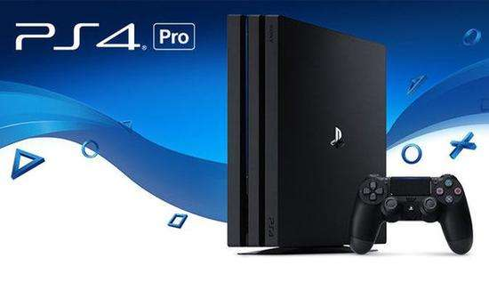
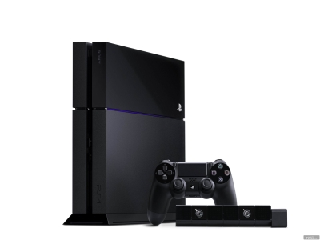
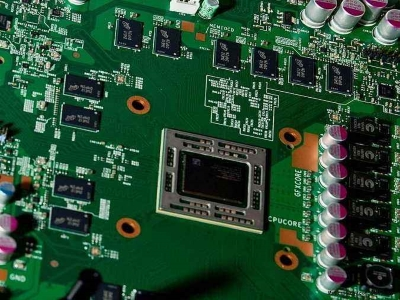
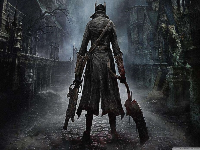

|  | 主机名：PlayStation IV 发售时间：2014年2月22日（日本） 发行商：索尼（Sony） 开发商： 索尼电脑娱乐（SCE） |
|
在发售后截止至2014年8月10日，索尼PS4的全球销量已经突破1000万台大关，并成为索尼史上销量最快的游戏机。最重要的是，1000万的数字并非经销商出货量，而是玩家实际买到手的PS4。在半年间，PS4的销量几乎翻了1倍，2月份的时候，索尼宣布PS4的销量为530万台。 APU处理器：整合了CPU、GPU和声卡 血源诅咒――猎人，野兽，古神。 |
   |